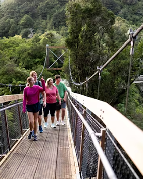

Upper Hutt

Hutt River Trail Loop
53.9km
Hutt River Trail is a flat, well-maintained trail that runs the length of Te Awa Kairangi, from Petone all the way to Te Marua in Upper Hutt.
It is popular with local cyclists, walkers, and runners, as well as dog walkers and families seeking a day-long adventure. Horses are permitted too.
The 29 kilometre trail runs the entire length of the Eastern Hutt Riverbank and most of the Western Hutt Riverbank. It follows a mixture of sealed and gravel terrain and can be completed in stages, or in short loops between railway bridges. It is also the first section of the Remutaka Cycle Trail.
Along the way, you’ll pass through lush parks, golf courses, and historic sites. There are many opportunities to stop for a picnic, a quick rest, or to play at a nearby playground. You’ll even discover two sites featured in The Lord of the Rings film trilogy.
Mount Climie
13km
The Mt Climie ridge provides the southern and eastern backdrop to Upper Hutt. It is also part of the long northern skyline of the Rimutaka Range seen across the harbour from Wellington City.
The track to Mt Climie starts from the upper picnic area. It is a steady uphill climb with plenty of shade.
You will be rewarded for your hard work with stunning views over the Hutt Valley on one side, and over to the Wairarapa on the other. Make sure you pause to admire them before descending back the way you came.


Swingbridge Track
2.1km
The Swingbridge Track is a family-friendly 2km loop walk that takes about 1 hour to complete. It takes you across a swing bridge suspended high above the Hutt River, then weaves downstream towards the river gorge. On this walk, mature rimu and rātā trees tower above you, and the Hutt River churns below.
For the past 20-plus years, Kaitoke Regional Park has been a stopping point for Lord of The Rings fans, as the area was a filming location for Rivendell.
Tane's Track
2.3km
Hidden away in the Hutt Valley, Tane’s Track is a leisurely 2.3km walking route winding from the Tunnel Gully car park through native bush to Mount Climie and back.
Begin your walk from the lower picnic area, then take the left-hand branch through rimu, mātai, kahikatea, and tawa forest. Cross the road that once formed the Remutaka railway line and climb through black beech forest up to Collins stream and a waterfall.
Shortly after starting back towards the car park, you’ll cross the Mount Climie access road and pass a grove of eucalyptus trees. This was once the campsite for workers who built the Mangaroa Railway Tunnel in 1877. This hour-long walk is protected from southerlies and is dog-friendly.


Te Ara Tirohanga
834m
Te Ara Tirohanga (formerly Remutaka Trig Track) starts near the summit of Remutaka Hill Road on the Upper Hutt side. Starting at 555 metres, it climbs to the northern crest of the Remutaka range at 725 metres.
It zigzags upwards on an exposed slope through regenerating native trees, shrubs, sub-alpine grasses, and lichen. The more you climb the ascending pathway, the better the view.
On a clear day, when you reach the trig, you’ll have superb views of the southern Wairarapa region. Including Lake Wairarapa, the Aorangi Range, and Pākuratahi Forest.